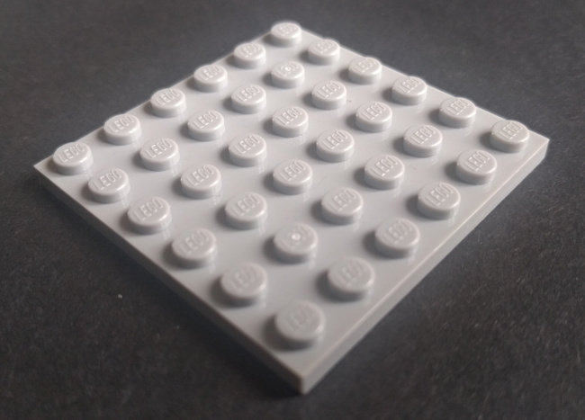
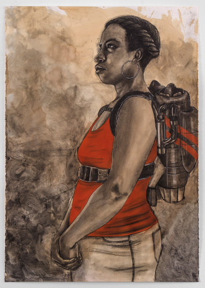

Computer Vision & IoT
Ron Evans - @deadprogram
Ron Evans (@deadprogram)
hybridgroup.com
Clients
Open Source Projects
gobot.io
gocv.io
What is computer vision?
Computer vision can...
Create privacy-violating surveillance systems
Computer vision can also...
Telepresence
Autonomous Vehicles
Augmented Humans
Good CV, Bad CV
Responsible IoT
Responsible computer vision systems
Offer visual indicators when cameras are in use
Process data on the edge device
Do not store data they do not have to
When they must store data, make it anonymous
When they must store data, have data retention/deletion policies
What others should there be? Discuss...
Implementing Real-world CV systems
Embedded Linux
Running on small devices
Low-power
High-performance
Languages for CV
Python
C++
golang.org
Go for computer vision
Concurrency
Portability
Performance
gocv.io
opencv.org
Intel OpenVINO
How OpenCV Works
Written in C++
OpenCV architecture
OpenCV Core
OpenCV Core modules
OpenCV contrib
How GoCV Works
GoCV architecture
Go → C → C++
Linux
mac os
Windows
Yes, I said Windows
Activity
“Hello World” in Go
How to run Go code
go run main.go
package main
import (
"fmt"
)
func main() {
fmt.Println("Hello, world")
}
Activity
“Hello World” of computer vision
The “Hello World” of computer vision
package main
import (
"gocv.io/x/gocv"
)
func main() {
webcam, _ := gocv.VideoCaptureDevice(0)
window := gocv.NewWindow("Hello")
img := gocv.NewMat()
for {
webcam.Read(&img)
window.IMShow(img)
gocv.WaitKey(1)
}
}
Into The Mat(rix)
Matrix (mathematics)
Mat is the fundamental data type
in OpenCV

Empty Mat
A Mat has a specific type
All elements of a Mat have the same type
Black and white image
Mat (2 dimensions, 8-bit integer)
Grayscale image
Mat (2 dimensions, 16-bit integer)
2-d vector
Mat (2 dimensions, floating point)
A Mat also has a specific number of channels
All elements of a Mat have the same number of channels
Grayscale image
Mat (2 dimensions, 16-bit integer, 1 channel)

RGB Color image
Mat (2 dimensions, 16-bit integer, 3 channels)
BGR Color image as array
Mat (2 dimensions, 16-bit integer, 3 channels)
3-d vector
Mat (3 dimensions, 2 channels, floating point)
Image Processing and Filters
What Are Image Filters?
Introducing CVScope
Dilate

How dilate works
Activity
Try Dilate with CVScope
Try Dilate with CVScope
cvscope dilate
kernel := gocv.GetStructuringElement(gocv.MorphRect, image.Pt(12, 12))
gocv.Dilate(src, &dest, kernel)
Erode

How erode works
Activity
Try Erode with CVScope
Try erode with CVScope
cvscope erode
kernel := gocv.GetStructuringElement(gocv.MorphRect, image.Pt(12, 12))
gocv.Erode(src, &dest, kernel)
Gaussian Blur

Gaussian curve
How Gaussian blur works
Activity
Try Gaussian Blur with CVScope
Try Gaussian Blur with CVScope
cvscope gaussian
gocv.GaussianBlur(src, &dest, image.Pt(0, 0), 30, 0, gocv.BorderConstant)
Applying CV
Streaming video
MJPEG
Activity
Video streaming
Video streaming code
Unprotected video camera on the Internet?
Twelve-factor app
12factor.net
Streaming video with authentication
Activity
Video streaming with basic auth
Video streaming with basic auth code
Face tracking
Face tracking
Face blurring
Cascade classifier
haar wavelet
Viola–Jones object detection
haar features
haar feature applied to eyes
haar feature applied to nose
2-feature classifier can eliminate negative matches
or else cascade to next layer of classifier to analyze using more features
gocv.CascadeClassifier{}
Activity
Face blurring with cascade classifier
Face blur code
CV using Deep Neural Networks
What is a Deep Neural Network (DNN)?

Feed-forward Neural Network
Recurrent Neural Network

Multi-layer Neural Network
Deep Neural Network
DNN frameworks
Caffe
Tensorflow
Torch
Darknet
OpenVINO Model Optimizer IR
CV with DNN workflow
GoCV + DNN architecture
Style transfer using a Deep Neural Network
"Starry Night" - Van Gogh
Chicago
Chicago Starry Night
"Perceptual Losses for Real-Time Style Transfer and Super-Resolution"
Justin Johnson, Alexandre Alahi, Li Fei-Fei
gocv.ReadNet{}
Torch
Activity
Style transfer using a Deep Neural Network
Style transfer code
Face blurring using DNNs
Caffe
OpenCV face tracking SSD model

Single-shot Multibox Detector (SSD)
Activity
Face blurring using DNNs
Face blurring DNN code
Extra credit activity:
Background blurring using DNNs
Background blurring DNN code
One last thought...
Humanity is acquiring all the right technology for all the wrong reasons.
R. Buckminster "Bucky" Fuller
"Abandoned Buran shuttle" - Ralph Mirebs
https://ralphmirebs.livejournal.com/219949.html

"Stateville Correctional Center" - Doug DuBois & Jim Goldberg
http://www.dougdubois.com/
http://www.magnumphotos.com/jimgoldberg

"Altitude determines attitude" - Robert Pruitt
http://robertpruittartist.tumblr.com